Overview
To start using ProcessMaker, first you need to know the elements of the Process Map and designer in order to create a process:
Designer
This tab introduces the user to select amongst seven options displayed on a sub menu, as well as a search tab to make a better searching of a list of processes created. Moreover, it also displays a list of processes created by users, so they are able to select one of them to start working on. It also provides detailed information of each process under the main menu as below:
- Process Title: Title of processes
- Category: Category of the process, that may be created in the process map
- Status: Status of the case
- User owner: the owner of the process
- Create date: Date of its creation
- Inbox: Number of processes in inbox
- Draft: Number of processes in draft
- Completed: Number of processes completed
- Canceled: Number of cases canceled
- Total Cases: Number of total cases
- Debug: Helps the user finding syntax errors, and also to trace the related variables.
- Process Type: Public, the process is available to all users to be edited. Private, the process is only available to the current user, owner of the process.
Available Version: PM 2.8.
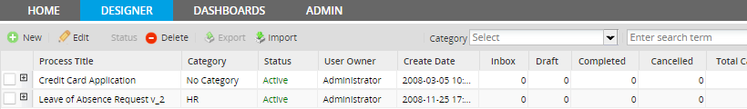
Designer Menu
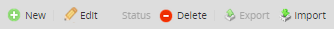
1.- New: This option allows to create a new process

- Title: The title of the new process
- Description: The description of the process to be created
- Category: The category that by default is set to “no category”
Note: It's strongly recommended to create and design processes in one language, because ProcessMaker does not support designing Multilingual Processes.
2.-  Edit: Allows the user edit an existing process, to edit a process first check on the box next to the process and then click on the "Edit" button:
Edit: Allows the user edit an existing process, to edit a process first check on the box next to the process and then click on the "Edit" button:
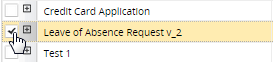
Otherwise a dialog box like the following will appear:

Once the user has selected the process to edit, this will appear on the process map to start making the changes
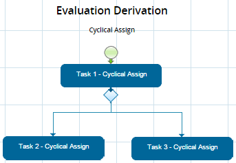
Note: If there are no processes checked on the box, some of the icons on the upper bar will not be activated like status and Export.
3.- Status: This icon shows the status of the process.
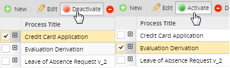
It appears enabled only when a process is selected; it has two properties:
- Deactivate: A user can discharged a process when it is successfully completed, if it has not been completed or if at the moment seems to be useful for the user. This status is established by default, meaning that the process is already active.
- Active: It enables the process to be reestablished, so the user can work on it again.
4.-  Delete: This options allows to delete a process. it will be deleted ONLY if there isn't users assigned in tasks and there's no cases on running
Delete: This options allows to delete a process. it will be deleted ONLY if there isn't users assigned in tasks and there's no cases on running
5.-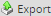 Export : from ProcessMaker 2.0.41 and on this toll allows the user to export a process from the designer menu directly. In older versions this property only existed on the process map. To see more information go to: Importing and Exporting Processes
6.- Import: This option allows importing a process from any other data base to ProcessMaker
When clicking on it, a dialog box will appear to give the user the opportunity to chose a file to import as it follows:

7.- Browse library: This icon directs the user to ProcessMaker library, so he can chose a process from a list with a number of example processes.

Note: From version 2.5.0, ProcessMaker Library has been removed since processes were deprecated.
8.- Category: Select a category of process
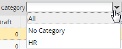
9.- Search: Filters the name of processes to be searched.
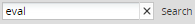
Pop Up Menu
When the user right clicks over the list of processes on Designer tab, a new type of menu will appear showing 5 short cut options.
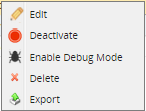
The Process Map
The Process Map is a grid area where business processes are laid out in a visual manner so they can be easily designed and their progress tracked at a glance. The Process Map uses a graphical drag-and-drop interface which allows elements to be easily added and deleted and rearranged. Right click contextual menus provide options for modifying the objects once they have been added to the map. Using the Process Map is a good way to clarify how the different people and departments in your organization will work together and to specify a logical order for decision making, approving requests, delegation of responsibilities, and fulfilling the necessary tasks to complete a process. The Process Map is designed to help you visually set up processes and their tasks, and then begin defining steps for each task. form version 2.0 it has a new view:
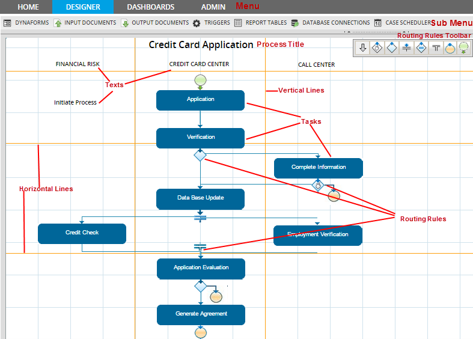
ProcessMap Elements
- Main Menu: tabs which are shown depending on the user's privileges
- Sub Menu: defined with elements to be created during a process.
- Process Title: defined when the process is created
- Task: elements which contains Dynaforms, Input Documents, Output Documents, etc.
- Routing Rules: Routing rules which can be added between tasks. This routing rules must be completed according to specific conditions.
- Routing Rules Toolbar: it contains routing rules, control workflow between tasks in a process.
The Map's Right Click Menu
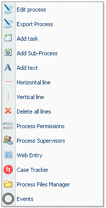
To start designing a process and adding elements to the Process Map, right click anywhere in a blank area on the map and select an option from the menu.
 Edit Process: This option allows the process name and its description to be modified. It also provides options to activate Debug Mode and set a calendar for the process.
Edit Process: This option allows the process name and its description to be modified. It also provides options to activate Debug Mode and set a calendar for the process.- Export Process: Processes can be exported to be used in other installations of ProcessMaker. For more information, see Importing and Exporting Processes.
 Add Task: Adds a new task to the Process Map.
Add Task: Adds a new task to the Process Map. Add SubProcess: Sub-processes allow cases to be run as a sub-process inside of a master process.
Add SubProcess: Sub-processes allow cases to be run as a sub-process inside of a master process. Add Text: Additional text labels can be added to the Process Map. This text can be used to label a set of tasks, identify departments in the organization, explain the routing logic, or even provide guidance to the user.
Add Text: Additional text labels can be added to the Process Map. This text can be used to label a set of tasks, identify departments in the organization, explain the routing logic, or even provide guidance to the user. Horizontal Line: Adds a horizontal line to the Process Map, to help visually divide up the process. Lines can be used to separate tasks or departments of your organization into logical groupings on your Process Map.
Horizontal Line: Adds a horizontal line to the Process Map, to help visually divide up the process. Lines can be used to separate tasks or departments of your organization into logical groupings on your Process Map. Vertical Line: Adds a vertical line to the Process Map, to help visually divide up the process. Lines can be used to separate tasks or departments of your organization into logical groupings on your Process Map.
Vertical Line: Adds a vertical line to the Process Map, to help visually divide up the process. Lines can be used to separate tasks or departments of your organization into logical groupings on your Process Map. Delete All Lines: This option will delete all horizontal and vertical lines on the Process Map.
Delete All Lines: This option will delete all horizontal and vertical lines on the Process Map. Process Permissions: Use Process Permissions to give specific users read-only access to information about cases. (For write access to cases, see Process Supervisors.) Process Permissions can be defined, so specific users can view or not view specified objects in cases, such as Dynaforms, Input Documents and Output Documents.
Process Permissions: Use Process Permissions to give specific users read-only access to information about cases. (For write access to cases, see Process Supervisors.) Process Permissions can be defined, so specific users can view or not view specified objects in cases, such as Dynaforms, Input Documents and Output Documents. Process Supervisors: Process Supervisors are designated users who can access cases from the process and change the case data in Dynaforms and Input Documents, without being assigned to particular tasks in the process. Use this submenu to specify what objects the Process Supervisors can access.
Process Supervisors: Process Supervisors are designated users who can access cases from the process and change the case data in Dynaforms and Input Documents, without being assigned to particular tasks in the process. Use this submenu to specify what objects the Process Supervisors can access. Web Entry: Web Entry is an option to initiate new cases from a Dynaform displayed in an external web page.
Web Entry: Web Entry is an option to initiate new cases from a Dynaform displayed in an external web page. Case Tracker: The Case Tracker allows external users to follow a case's progress and access information about that case through a case code and PIN. Use this submenu to specify what objects the external users are allowed to see in the Case Tracker.
Case Tracker: The Case Tracker allows external users to follow a case's progress and access information about that case through a case code and PIN. Use this submenu to specify what objects the external users are allowed to see in the Case Tracker. Process Files Manager: Use the Process Files Manager to load external documents into ProcessMaker. Unlike Input Document files, which often change for each new case, this option is generally used for files which are unchanging and needed by all the cases in a process. The Process Files Manager can also create email templates which are used to sendnotifications.
Process Files Manager: Use the Process Files Manager to load external documents into ProcessMaker. Unlike Input Document files, which often change for each new case, this option is generally used for files which are unchanging and needed by all the cases in a process. The Process Files Manager can also create email templates which are used to sendnotifications. Events: Events allow a trigger to be fired or an email to be sent at a specified time during a process.
Events: Events allow a trigger to be fired or an email to be sent at a specified time during a process.
Tips for using the Process Map:
Since ProcessMaker is a web-based application, it may occasionally have trouble exiting dialog boxes in the Process Map. If ProcessMaker hangs when displaying a dialog box, return to the main Process Map by clicking the refresh button on your web browser.
The Process Map does not offer an undo option and does not allow you to save different versions of the map. If you anticipate experimenting with the map, but might possibly want to return to a previous version of the map afterwards, it is a good idea to export the process before making any changes. To return to a previous version of the map, delete or rename the current process and then import the previous version.
Creating a Process
Login as the "admin" user or another user which has the PM_FACTORY permission in its role, so it can edit processes. Go to the DESIGNER menu, and click the New link at the top left of the list of processes. Enter a name, description and select a Category for the new process and click on Create.
Where:
- Title: Title of the process.
- Description: brief description of what is the process about.
- Category: choose a category to which the process will belong.
When the process has been created, it will redirect automatically to the Process Map to start creating it.
Note: It is possible to have several processes all together in a map. To run each one of them don't forget to assign a user to the initial task.
Editing a Process
This option allows users to modify process information. Right-click on the Process Map and then click on Edit Process, the following window will display:
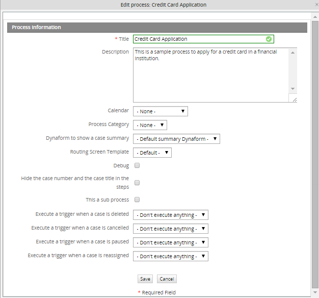
Title
Fill this with the name of the process. This field accepts characters which consists of letters, numbers, '_' (underscores), and (-) hyphens. Try not to enter characters like '$', '#', '&', etc. because the process may not be exported then.
Description
Fill this with a brief description of what is the process about.
Calendar
Select a Calendar from the list, which indicates the hours and days when users are expected to be at work. You can create your own calendar depending on the work hours.
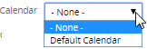
Process Category
Select one Category from the list which will identify the process. You can create your own category.
Dynaform to show a Case Summary
From the list, choose the Dynaform which information will appear on the Case Summary.
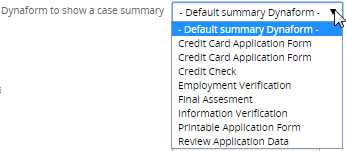
Routing Screen Template
This new feature comes since version 2.0.38 and allows users to personalize the routing screen. This feature was created for the User Experience interface where an external user doesn't need to know the user(s) who will be derivated into the next case or which is the next task. However, this option can by applied in the normal ProcessMaker interface. Users can create their own template based on the default routingscreen template from ProcessMaker file called cases_ScreenDerivation.html located on:
The routing screen template can be used either for the whole process or for a single task.
It is recommended to create a new template based on the variables of this file. This variables will be extracted from the ProcessMaker variables, that's why it's not necessary to save the new template on the above path, it can be stored on the the user's machine.
Once the template is finally created upload it using the Process File Manager.
Then choose it from the list:

For instance, on the routing screen is not necessary to show information for the next task and the user assigned into it; a normal routing screen is:
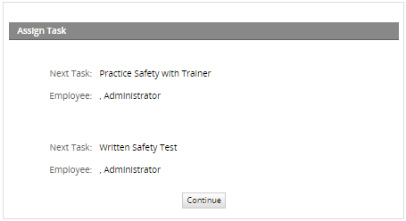
Modifying the template:
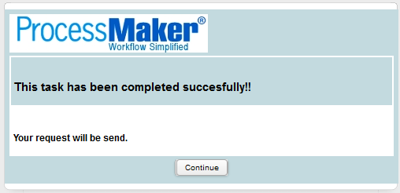
A piece of the HTML code using for this template is the one shown below:
<table cellspacing="0" cellpadding="0" width='100%' style="background-color:#FFFFFF">
<tr>
<td style="width:100%;padding-right:5px; padding:3px;color: #000000; font:10px/150% sans-serif,MiscFixed;border:2pt solid
#FFFFFF;background-color:#C3DADF"> <h2>This task has been completed succesfully!!</h1></td>
</tr>
<tr>
<td style="width:100%;padding-right:5px; padding:3px;color: #000000; font:10px/150% sans-serif,MiscFixed;border:2pt solid
#FFFFFF;background-color:#FFFFFF"> <h3>Your request will be send.</h3></td>
</tr>
</table>
{if $PROCESS.ROU_TYPE eq 'SELECT'}
<form name="frmDerivation{$id}" id="frmDerivation{$id}" action="cases_Derivate" method="POST" class="formDefault" method="post" style="margin:
0px;"><input type="hidden" name="form[ROU_TYPE]" id="form[ROU_TYPE]" value="{$PROCESS.ROU_TYPE}">
<tr>
<td class="FormLabel" width="100">{$OPTION_LABEL} {$id}:</td>
<td class="FormFieldContent">{$data.ROU_CONDITION }</td>
</tr>
{/if}
....................................
Type of Process
This feature is available from version 2.8 and sets a process as public or private.
- Public The process can be accessed by all users that have access to the DESIGNER and edited.
- Private The process can only be accessed and edited by the user who created it.
Select from the dropdown menu whether the process will be private or public. By default all processes are public and accessed by all users.
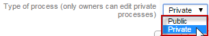
Note: Imported processes are set by default as public.
Activating Debug Mode
When designing a process, it is a good idea to activate the Debug option, which will show you when triggers are fired during routing rules and any errors which occur. In normal production mode, error reporting is suppressed, so it is often difficult to know whether the trigger code executed correctly or not. More importantly, "Debug" mode allows you to examine the values in the variables which are passed to triggers. For security reasons be sure to deactivate "Debug" mode when your process is used in production.
To activate "Debug" mode, right click on a blank area in the Process Map and select the option "Edit Process". In the dialog box which appears mark the "Debug" checkbox and click "Save".
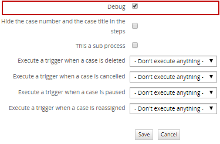
Now when triggers fire during a case, a debug panel containing information about the trigger will be display next to the Dynaform, Input or Output Document assigned into that task.
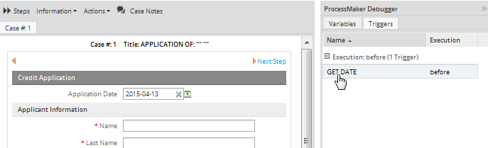
To examine the code in the trigger, click on the name of the trigger.

The variables which are passed to the trigger in an array can also be examined.
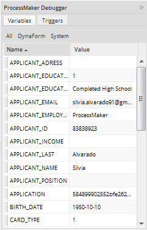
If there would be an error with some variable, the message indicatind the error will be shown in the panel of the debugger.
Hiding the case number and case title
For version 2.0.43 it is possible to Hide the case number and the case title in the steps while running a case.
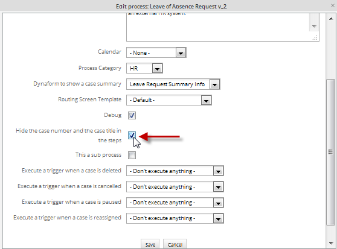
It means that the case number and case title located on the upper side of a Dynaform, Input or Output Document will be hidden:
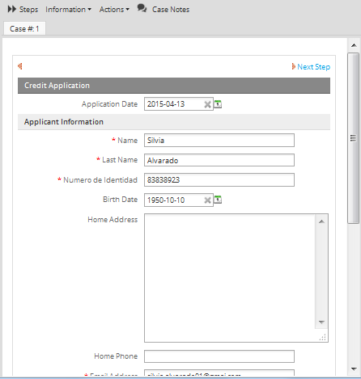
Sending a notification when a case is deleted, cancelled, paused, or reassigned
Available Version: 2.5
If users want to send notifications depending on the action taken over a case, they will be able to configure them while editing a process. This configuration must be to set for each process.
Those notifications work with the execution of a specific trigger, so the following configurations must be set to have these worked correctly:
- Configure email notifications
- Create a Trigger using the PMFSendMessage function to be able to have mails sent.
- Create and upload a HTML Template which will contain body of the email message.
- If the user who is not an admin user is going to delete, cancel and reassign cases, he must have set permission to delete, cancel and reassign cases respectively.
- You don't need to assign the trigger in any task of the process.
To configure notifications open the process where the notifications will be sent, right click on the Process Map and click on "Edit Process":
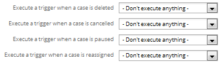
By choosing any of them all available triggers will be listed. This notifications will be send once they are configured and a case is started, they won't work if a case was started first and then notifications were configured.
Sending a notification when a case is deleted
If a user wants to delete a case, a notification would be sent to specific users notifying the case has been deleted. Creating a PMFSendMessage function, called "Send Notification when a case is deleted", as follows:
Note: Don't forget to create the email template.
Selecting the trigger:
Finally, deleting the case, the following notification will be sent, to the user or users who were defined on the above function:
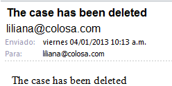
Sending a notification when a case is cancelled
If an user wants to cancel a case, a notification would be sent to specific users notifying the case cancellation. Creating a PMFSendMessage function, called "Send Notification when a case is cancelled", as follows:
Note: Don't forget to create the email template.
After selecting the trigger and canceling the case, the following notification will be sent, to the user or users who were defined on the above function:
Sending a notification when a case is paused
If a user wants to pause a case, a notification would be sent to specific users notifying the case was paused. Creating a PMFSendMessage function, called "Send Notification when a case is paused", as follows:
Note: Don't forget to create the email template.
After selecting the trigger and canceling the case, the following notification will be sent, to the user or users who were defined on the above function:
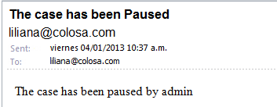
Sending a notification when a case is reassigned
If a user wants to reassign a case, a notification would be sent to specific users notifying the case was reassigned. Creating a PMFSendMessage function, called "Send Notification when a case is reassigned", as follows:
Note: Don't forget to create the email template.
After selecting the trigger and reassigning the case, the following notification will be sent, to the user or users who were defined on the above function:
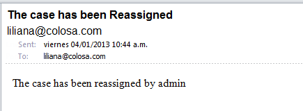
Creating Tasks
Once the process is created, task must be defined, go to this section to see task properties and how to create them.